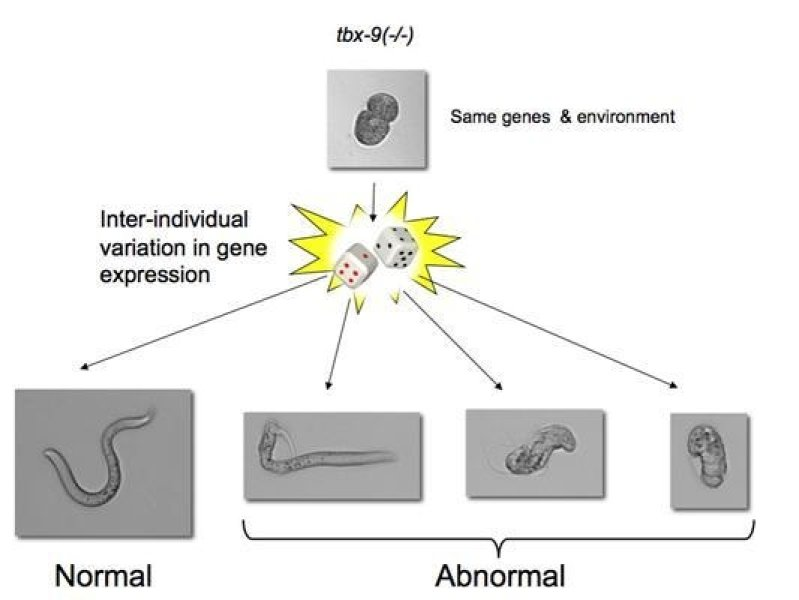

Postdoctoral scholar, Department of Human Genetics, UCLA
My research interest include systems biology, genomics, evolution and development.
Loss of flight in the Galapagos cormorant mirrors human skeletal ciliopathies
Historical background: Changes in the size and proportion of limbs and other structures have played a key role in the adaptive evolution of species. However, despite the ubiquity of these modifications, we have a very limited idea of how these macroevolutionary changes occur on the genetic and molecular levels, especially in vertebrates. This is mostly due to the fact that successful genetic mapping strategies such as QTL mapping and Genome Wide Association Studies (GWAS) cannot be applied to the study of species who ancestors diverged millions of years ago. To fill this gap, we studied a recent and extreme case of wing size and pectoral skeleton reduction leading to flightlessness in the Galapagos cormorant (Phalacrocorax harrisi) using a novel joint predictive and comparative genomics approach.
Among the strongest predicted function-altering variants present in P. harrisi, I found a significant enrichment for genes mutated in human skeletal ciliopathies. The primary cilium is essential forHedgehog (Hh) signaling in vertebrates, and individuals affected by ciliopathies have small limbs and rib cages, mirroring the phenotype of P. harrisi. Furthermore, I showed that the Galapagos Cormorant CUX1, a highly conserved transcription factor, has a four amino acid deletion in its regulatory domain. I molecularly dissected the consequences of this deletion and demonstrated that this variant impairs the ability of CUX1 to transcriptionally upregulate cilia components and promote chondrogenic differentiation. Thus, my results indicate that the combined effect of variants affecting both the function and transcriptional regulation of cilia components caused the highly reduced wings and other skeletal adaptations associated with loss of flight in the Galapagos cormorant.
The contribution of stochastic gene expression to the incomplete penetrance of mutations
Historical background: Many mutations, including those that cause disease, only have a detrimental effect in a subset of individuals (incomplete penetrance). The reasons for this are usually unknown, but may include additional genetic variation (genetic background) and environmental risk factors. However, phenotypic discordance remains even in the absence of genetic variation, for example between monozygotic twins and in isogenic model organisms growing under the same environment. To shed light into the incomplete penetrance of mutations, we decided to use the nematode C. elegans as a model system the study the incomplete penetrance of mutations because of (1) its invariant cell lineage, (2) the availability of large isogenic populations growing in homogeneous environments, and (3) the availability of an extensive collection of null mutants.
Central finding: Using a fluorescence-based method to monitor fluctuations in gene expression during early embryonic development, we found that gene expression noise in individual mutant embryos could predict whether a given individual would be affected by a mutation or not [1]. For example, tbx-8 and tbx-9 are two redundant genes that originated from a gene duplication event. Interestingly, only 50% of worms that carry a null mutation in tbx-8 develop a phenotypic abnormality. Those individuals that stochastically expressed higher levels of tbx-9, the paralog of tbx-8, during early development were more likely to develop into phenotypically wild type adults. Moreover, incorporating the stochastic variation in the expression of more generalized buffers, such as the chaperone Hsp90, resulted in more accurate predictions models.